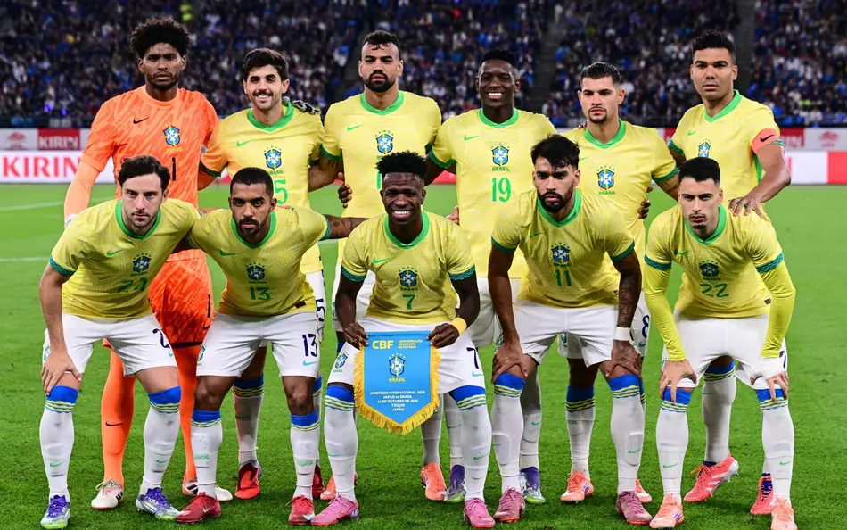

O Brasil ficou no grupo Grupo C, ao lado de Marrocos, Haiti e Escócia. A seleção, comandada por Carlo Ancelotti, terminou a primeira fase em primeiro lugar, com 7 pontos.
O Brsil terminou o torneio na 11ª colocação entre as 48 seleções.É o pior resultado do país desde1996, quando também ficou em 11°.
A Noruega, que eliminou o Brasil, terminou a Copa em 5° lugar - a melhor campanha da história da seleção norueguesa.
Para saber mais sobre o tornei, visite o site oficial da FIFA .